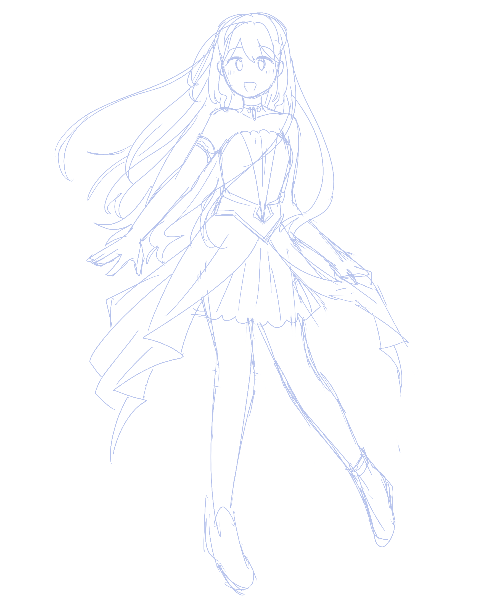
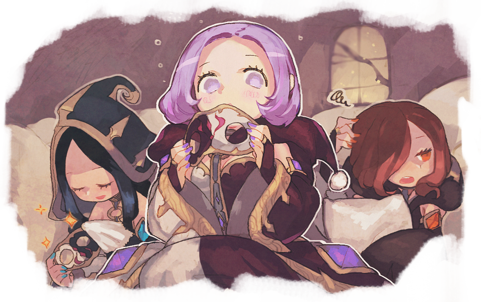
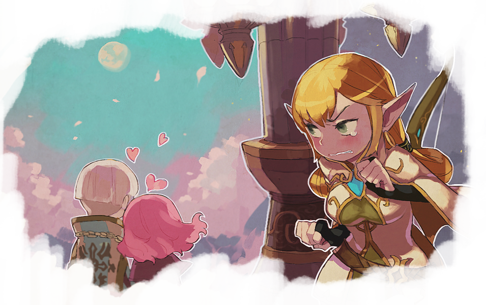
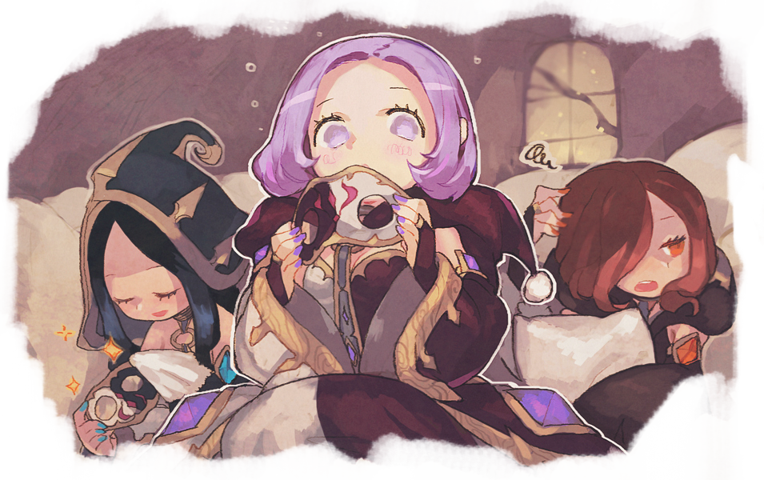
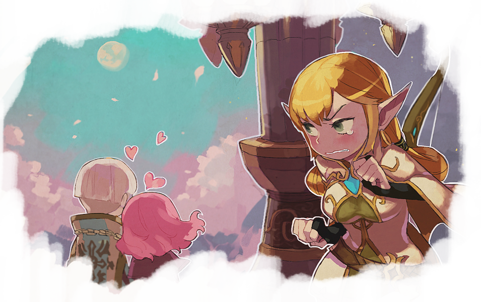

Story
The story follows the exploits of Bell Cranel, a 15-year-old solo adventurer under the goddess Hestia. As the only member of the Hestia Familia, he works hard every day in the dungeon to make ends meet while seeking to improve himself. He looks up to Ais Wallenstein, a famous and powerful swordswoman who once saved his life, and with whom he fell in love. He is unaware that several other girls, deities and mortals alike, also develop affections towards him; most notably Hestia herself, as he also gains allies and improves himself with each new challenge he faces.
Meet:
-
Studying hard to become a doctor, Kei Nagai is a high schooler who knows very little about Ajin, only having seen them appear in the news every now and then. Students are taught that these creatures are not considered to be human, but Kei doesn't pay much attention in class. As a result, his perilously little grasp on this subject proves to be completely irrelevant when he survives an accident that was supposed to claim his life, signaling his rebirth as an Ajin and the start of his days of torment.
GIRL #1

NaK4m4 4 L1f3
 



Explore a vast world


100 years ago, the land of XXX was destroyed by a calamity, now refered to as The Calamity. Now, XXX is once again flourishing, but sinister forces are once again rising behind the scenes...